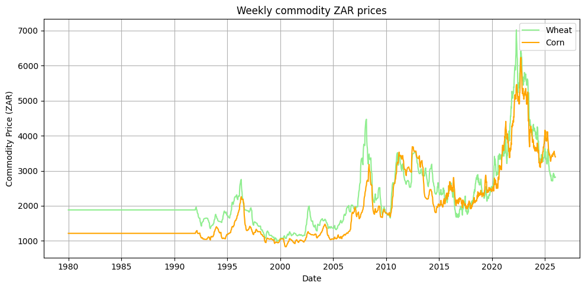

Historic data | Seasonal patterns | Correlation trends
Grain price data were incorporated into the analysis as an additional economic indicator representing broader agricultural market conditions. Grain markets are closely linked to livestock production systems, as grain prices influence feed costs, input expenses, and overall agricultural profitability. Changes in grain prices can therefore provide insight into cost pressures experienced across the agricultural value chain.
The grain price data used in this study were obtained through the **Alpha Vantage API**, which provides access to financial and commodity market data. Alpha Vantage is a financial data platform that supplies time series information for various market indicators, including commodity prices, foreign exchange rates, and economic data. The platform provides programmatic access through APIs, allowing historical market data to be retrieved automatically rather than requiring manual downloads.
For this study, API requests were used to retrieve historical commodity price data for selected grain-related commodities. The API communicates with the Alpha Vantage database by sending structured requests containing the required commodity identifier, time period, and data frequency. The returned data were provided in a structured format, which was imported directly into Python for further processing and analysis.
In addition to grain prices, relevant exchange rate information was retrieved through the Alpha Vantage foreign exchange API. Exchange rates are an important consideration in agricultural commodity markets, as grain prices are influenced by international market conditions and South Africa's exposure to global commodity trade. Changes in the exchange rate can affect import and export competitiveness, input costs, and domestic commodity prices.
The retrieved datasets were subsequently cleaned, formatted, and aligned according to the required time frequency before being incorporated into the broader agricultural dataset. This ensured that grain price movements could be compared with other agricultural and environmental variables, such as rainfall, fuel prices, and livestock prices.
Although additional South African agricultural data sources exist, including the Bureau for Food and Agricultural Policy (BFAP), South African Grain Information Service (SAGIS), and Department of Agriculture publications, the Alpha Vantage API was selected for this study due to its automated retrieval capability and suitability for time series analysis. These alternative sources provide valuable information regarding crop estimates, production statistics, imports, exports, and market reports, and can be used to complement commodity price analyses.
Understanding historical grain price behaviour is important when analysing agricultural markets, as grain prices represent a major cost component within farming systems. The historical grain price trends are presented below to illustrate changes in commodity prices over time and provide context for their potential influence on agricultural market dynamics.
